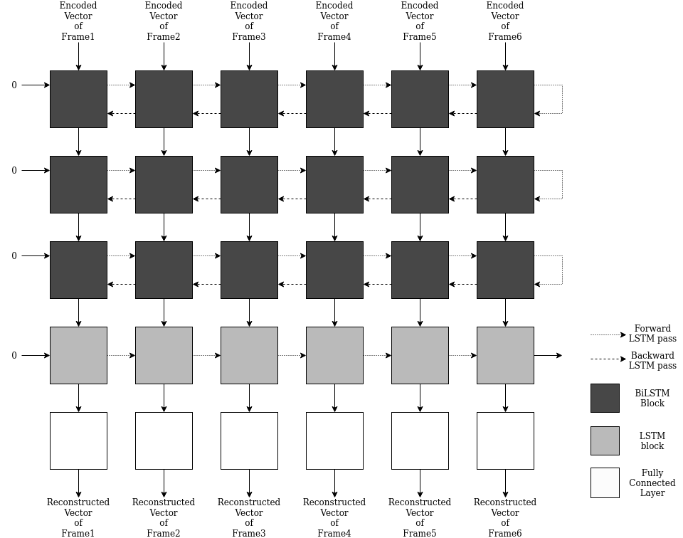

Gait-Occlusion-Reconstrution
 Gait occlusion in input sequence
Gait occlusion in input sequence
Gait-Occlusion-GAN
UnPublished: made public temporally
Original code for the paper “BGaitR-Net: Occluded Gait Sequence reconstruction with temporally constrained model for gait recognition” under Prof. Pratik Chattopadhyay.
This work proposes simple BiDirectional Filtering of the latent vectors of The silhouettes. TimeSeries Data of the latent space is been filter for reconstruction using a simple Bi-LSTM trained with A sophisticated method proposed in the paper. The Conversion of the Spatio Data to latent space was done using a conditional Variational AutoEncoder. We have used a 3 Datasets : for training 2 namely, CASIA-B, OU-ISIR large population, and testing 1 namely, TumIITKGP.
A conditional GAN based approach is also been presented in code
Proposed approach
We have used a Model based approach for feature extraction using Temporally constrained Kmeans Clustering and Short Path in a Weighted Graph for assigning Keypose for the Sequence even in case of Occlusion. This achieved substantially better results
 Propoesed Approach
Propoesed Approach
 Model Architecture
Model Architecture
 Model Architecture - 2
Results
 Visual inspection of Reconstruction for a sequence with over 73 occlusion.
Visual inspection of Reconstruction for a sequence with over 73 occlusion.
(a) Input Sequence
(b) Reconstructed Sequence
(c) Ground Truth
Successfully able to Reconstruct 22 Frames from just 8 Frames with a Dice score 0.98

CMC Accuracy of Gait Recognition for TUM-IITKGP Dataset
Somnath Kumar
Research Fellow, Microsoft Research India
My research interests is interpretable Reinforcement Learning.